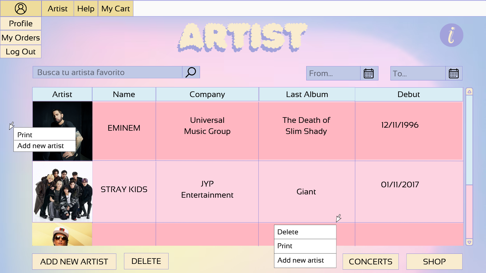

Gestión de Artistas: Ayuda
Descripción general
Esta ventana permite realizar las operaciones de mantenimiento básico de los artistas de Fanetix. El administrador podrá mediante los controles de los que dispone la ventana crear, modificar y eliminar los diferentes artistas de la aplicación. Así mismo podrá generar un informe que contiene un listado de todos los artistas de la aplicacion. Además, el administrador también puede realizar las operaciones disponibles para los clientes, como la búsqueda y filtrado de artistas, así como acceder a la tienda de productos y la sección de conciertos.
Operaciones
Crear artistasPara crear un artista podrá hacerlo de 2 maneras o bien con el botón Add Artist o bien dando click derecho en la pantalla pulsando en el menu de contexto la opcion con el mismo nombre. Esto creará de base un artista nuevo con valores de base. Si no se produce ningún error, se creará el artista y aparecerá en la tabla de artistas que se muestra en la ventana.
Modificar datos de el artistaPara modificar los datos de un artista primero deberá hacer doble click en la variable que se quiere modificar. Se tendrá que tener en cuenta que se tendrá que cumplir las diferentes validaciones que se han establecido. Una vez realizado el cambio deberá pulsar el botón "ENTER", en caso de querer cancelar la modificacion se podrá hacer mediante el botón "ESC" o pulsando fuera de la variable editada.
Si no se produce ningún error, se modificarán los datos del artista y los datos actualizados del artista aparecerán en la tabla de artistas que se muestra en la ventana.
Eliminar artistasPara eliminar un artista deberá seleccionar el artista a borrar haciendo click en fila deseada de la tabla de artistas. A continuación, pulse en el botón Delete, y se le solicitará confirmación para eliminar el artista. Si confirma el borrado y no se produce ningún error se eliminará el artista y se actualizará la tabla de artistas que se muestra en la ventana.
Búsqueda y filtrado de artistasEl administrador puede buscar artistas ingresando su nombre o el de la compañía discográfica en la barra de búsqueda. También puede aplicar filtros para organizar la lista de artistas según su fecha de debut.
Acceder a la tienda de productosPulsando el botón Tienda, se redirigirá a la sección donde podrá explorar y gestionar los productos relacionados con los artistas.
Consultar conciertosPulsando el botón Conciertos, accederá a la sección donde podrá consultar los eventos y conciertos de los artistas disponibles en la aplicación.
Imprimir listado de artistasDando click derecho en la pnatalla, pulsando en el menú de contexto la opción Imprint se abrirá una ventana donde puede ver un documento
que contiene un listado de los artistas que existen en la aplicación:

Mediante los botones de la parte superior de la ventana podrá imprimir o almacenar dicho informe.
Pulsando el botón Ayuda verá este documento de ayuda.